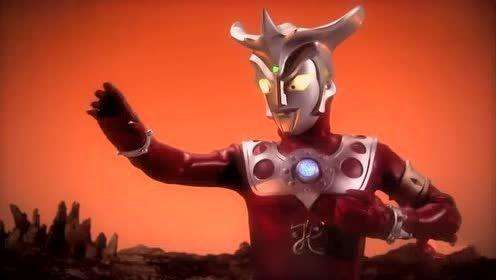

奥特曼实力排行前十第1名 诺亚奥特曼 排名奥特曼实力排行2018第一的诺亚·奥特曼存在于传说中的奥特曼，是年龄最大的奥特曼，也是是从太古时代起便守护着宇宙的传说中的光之救世主，是奈克斯特·奥特曼、奈克瑟斯奥特曼的最终形态，其背部伸缩自如的“诺亚之翼”使得诺亚拥有穿越空间和时间的能力，是神秘四奥之一。 诺亚奥特曼技能：诺亚·地狱火、诺亚·火花、诺亚·迅雷伏特、诺亚·暴风雪、光辉·诺亚、诺亚·反射、诺亚·银河、诺亚·幻影、诺亚·透视、诺亚·拳、诺亚·踢、诺亚·肘 诺亚奥特曼必杀技：闪电·诺亚、重力·诺亚、诺亚·射击、诺亚·波动、诺亚·光斩 第2名 赛迦奥特曼 赛迦·奥特曼是十大最强奥特曼之一，被称为由光之国最强大的战士，赛迦·奥特曼与诺亚奥特曼、雷杰多奥特曼、奥特之王并称为神秘四奥。光之国最强大的战士赛迦·奥特曼、慈爱的勇者高斯·奥特曼、传说的英雄戴拿·奥特曼，三个性格不同的奥特曼为了地球的危机而相遇，三人合体创造出新的赛迦奥特曼，终于击败了海帕杰顿和百特星人。 赛迦奥特曼技能：赛迦风暴、超级加速瞬间移动、等离子光波、光之飞弹、撒迦光轮、音速撞击、赛迦斩刃、赛迦钻孔拳、大宇宙真空战法 赛迦奥特曼必杀技：极限之拳 此处显示新 Div 标签的内容
第3名 雷杰多奥特曼 雷杰多奥特曼也是神秘四奥之一，在《高斯奥特曼VS杰斯提斯奥特曼》中登场，由高斯奥特曼和杰斯提斯奥特曼融合后召唤出现，雷杰多奥特曼在剧中一出场就消灭了基伽恩多拉，拥有不亚于奥特之王的实力，是奥特曼实力排行2018中当之无愧的强者。 雷杰多奥特曼技能：极光之力、雷杰多爆裂、雷杰多运动、雷杰多保护、雷杰多脉动、雷杰多清理、雷杰多听觉、雷杰多移动、雷杰多锁、雷杰多实体化、穿越时空 雷杰多奥特曼必杀技：火花传说 第4名 奥特之王 奥特之王是居住在国王星的长者，是光之国的老大，被光之国的奥特战士称作“王”，也是神秘四奥之一，其实奥特曼实力排行2018中的四奥的说法是网友以讹传讹的，官方是远古三奥。奥特之王是奥特一族传说中的超人，年龄为30万岁，拥有远远凌驾于其它奥特战士的实力。在贝利亚奥特曼入侵奥特之国的时候，他现身封印了贝利亚·奥特曼，每当宇宙中有危机来临之时，他就会现身，是十大最强奥特曼之一。有人说认为实力最强的奥特曼就是奥特之王，但是如果是老奥特曼的粉丝就会知道，奥特之王在最强奥特曼诺亚面前不值一提。 奥特之王技能：瞬间移动、王之念力、洗礼光线、再生光线、奥特风暴之锤、王之闪光、王者披风、王之火花、召唤雷电(暴风雪、暴风雨) 奥特之王必杀技：深不可测 第5名 闪耀迪迦 闪耀迪迦是和黑暗迪迦相对立的形态，是迪迦最为极端的另一种形态。闪耀迪迦出场的机会并不多，加坦杰厄击败迪迦，使其再次变成石像的姿态。但是TPC集其全力出击“ 营救迪迦计划”展开，结果，全世界的孩子们和丽娜的心灵之光进入了迪迦的身体，是孩子们的爱心才激发了闪耀迪迦。而剧场版迪迦被打败后，是超古代光之古人将光注入迪迦体内，才使他第二次变成闪耀迪迦，打败了卡密拉。 闪耀迪迦技能：杰拉迪斯光线、无限闪耀哉佩利敖光线、无限闪耀爆裂、终极闪光毁灭、无限闪耀环身盾 闪耀迪迦必杀技：究极哉佩利敖光线 第6名 黑暗迪迦 说起黑暗迪迦可能大家会比较陌生，黑暗迪迦是迪迦·奥特曼的原始形态，也是十大最强奥特曼之一。3000万年前四个超古代黑暗巨人黑暗最强战士迪迦、爱憎战士卡蜜拉、力量战士达拉姆、敏捷战士希特拉中，黑暗迪迦是最强的，黑暗迪迦转向光明后吸收了其他三个黑暗巨人有了今天的迪迦。 黑暗迪迦技能：吸收能力、黑暗手掌切割、黑暗眼光 黑暗迪迦必杀技：哉佩利敖光线 第7名 赛罗奥特曼 赛罗奥特曼出身不凡，是赛文奥特曼的儿子，光之国的新生代奥特战士，现在被尊为光之国最强的的年轻奥特战士，隶属宇宙警备队，创建了终极赛罗警备队，他的师父是奥特曼实力排行2018第八的雷欧奥特曼。赛罗奥特曼曾因年少叛逆意图触碰等离子火花塔，险些酿成大错，之后赛文奥特曼把他交给雷欧·奥特曼训练，意在塑造强大的内心。后被奥特之王告知才知晓自己的身世，并和伙伴们一起成功解救了被贝利亚威胁的光之国。赛罗奥特曼能够进行多种形态的变身，各个形态都具备不同的强大能力。有人认为在奥特曼实力排行2018里赛罗奥特曼强是因为它开挂了，赛罗奥特曼的武器是奥特曼实力排行2018第一的诺亚奥特曼的眼睛。 赛罗奥特曼技能：赛罗飞踢、踢击战法、大爆炸赛罗、赛罗摔、赛罗重拳、强壮日冕攻击、奥特飓风、粒子月神奇迹、赛罗百裂拳、赛罗百裂踢、艾梅利姆切割、集束赛罗射线、赛罗双生射线、赛罗光束扣杀、加尔奈特爆破、满月光波、立波留姆粉碎、拯救生命光线、灵魂净化光线、帝斯修姆射击、黑暗双生射线、光辉艾梅利姆切割、重型合唱、集束超限射线、雷欧赛罗飞踢、雷欧赛罗双重闪光、组合赛罗、最终究极赛罗三位一体、赛罗净化、赛罗防护屏障、光辉繁星驱动、光辉空间、赛罗头镖、赛罗孪生剑、赛罗火花、赛罗长矛、赛罗盾牌、头镖攻击、等离子火花斩、奇迹赛罗头镖、究级赛罗之剑、长剑光线究极赛罗、最终究极赛罗、头镖切裂攻击、四重头镖、超限孪生刃 赛罗奥特曼必杀技：双重究极必杀剑 第8名 雷欧奥特曼 雷欧来自来自于L77星云，起初并不是太强。后来跟赛文进行各种训练，而逐渐成为优秀的奥特战士，被认为是宇宙拳法的高手，成为了十大最强奥特曼之一，拥有远远凌驾于其他奥特战士之上的身体能力和体术(奥特兄弟体能、格斗第一)，以出色的格斗技巧弥补了能量弱、活动时间短、光线技不足的缺点。 雷欧奥特曼技能：雷欧双重飞踢、急降飞踢、旋转飞踢、雷欧腿切、雷欧二段踢、雷欧背踢、手刀切割、十字斩、背后劈砍、身体回旋镖、雷欧拳、雷欧头突、雷欧挺举、飞机投、背投技、雷欧巴投、雷欧过肩摔、回转投技、雷欧摇摆、雷欧断流斩、雷欧吹气、双重踢、双重意念杀、师徒飞踢、能量光球、射击光束、手掌光束、雷欧射击、火花光线、十字光线、光束灯光线、红色手里剑、计时器射线、全身发光、黑色光弹、绿色光束、复活光线、还原光线、移动光线、双重闪光、双重火花、透视、狮子的咆哮、风车战法、水晶还击 雷欧奥特曼必杀技：雷欧飞踢 
第9名 泰罗奥特曼 泰罗奥特曼是宇宙预备队的总教官。泰罗的格斗能力非常强，动作敏捷且出招迅速，经常能造成破坏性伤害，其格斗能力毫不逊色于奥特曼实力排行2018中排名高于它的赛文、雷欧和阿斯特拉。同时，泰罗还具备光线攻击和复生能力，是奥特曼中极少数能使用奥特炸弹的，泰罗是奥特兄弟当之无愧的最强战斗力。 泰罗奥特曼技能：燕式飞踢、空中踢、泰罗膝踢、原子拳击、飞行原子弹拳、急降拳击、泰罗劈砍、泰罗手刀、头部劈斩、泰罗投甩、泰罗能量、泰罗旋转、泰罗首投、泰罗背投、泰罗巴投、岩石抛落、泰罗升降机、超级泰罗踢、斯特利姆光线、斯特利姆光线简易版、新斯特利姆光线、泰罗射击、冷冻光线、箭头光线、蓝色激光、射击光束、手指光束、脚底光线、交叉光线、反重力光线、泰罗光刀、手里剑光束、清洗光线、治疗光线、反弹光线、泰罗火焰、泰罗屏障、泰罗龙卷风、火焰冲击、奥特念力、光之路、宇宙奇迹光线、泰罗淋浴、泰罗屏障、停止能力、奥特六重合体、奥特加能、球战法、盐战法、豆战法、透视能力、六兄弟升降机、治愈光线、泰罗解冻、泰罗锁链 泰罗奥特曼必杀技：奥特炸弹 第10名 阿斯特拉 阿斯特拉是奥特曼实力排行2018第八的雷欧奥特曼的弟弟，奥特十兄弟之一。阿斯特拉的腕力高达18万吨，在奥特曼中也属少有的力量，而且其臂环还能将臂力加倍。阿斯特拉的踢术、拳法和手刀均相当出色，在雷欧TV中经常现身为雷欧奥特曼化解险情，在战斗力方面并不比雷欧差多少。 阿斯特拉技能：阿斯特拉淋浴、目眩术、微缩术、阿斯特拉劈砍、阿斯特拉飞踢、射击光束、双重踢、奥特双重火花 阿斯特拉必杀技：奥特双重闪光
|
Welcome to